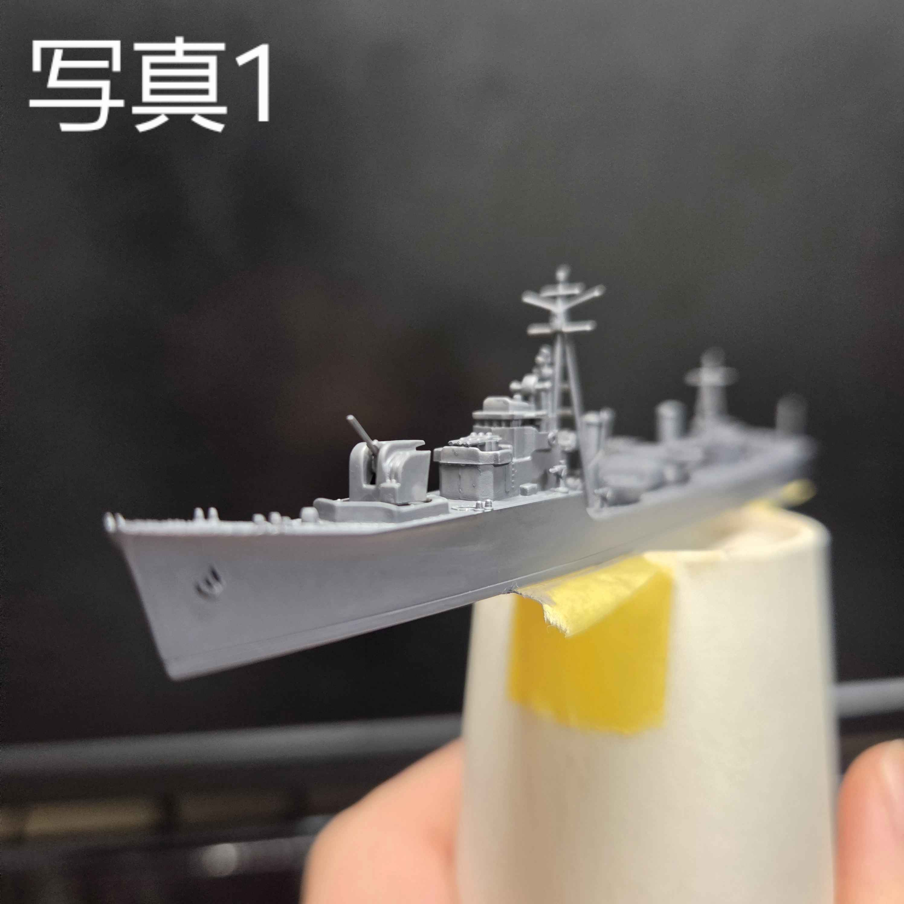
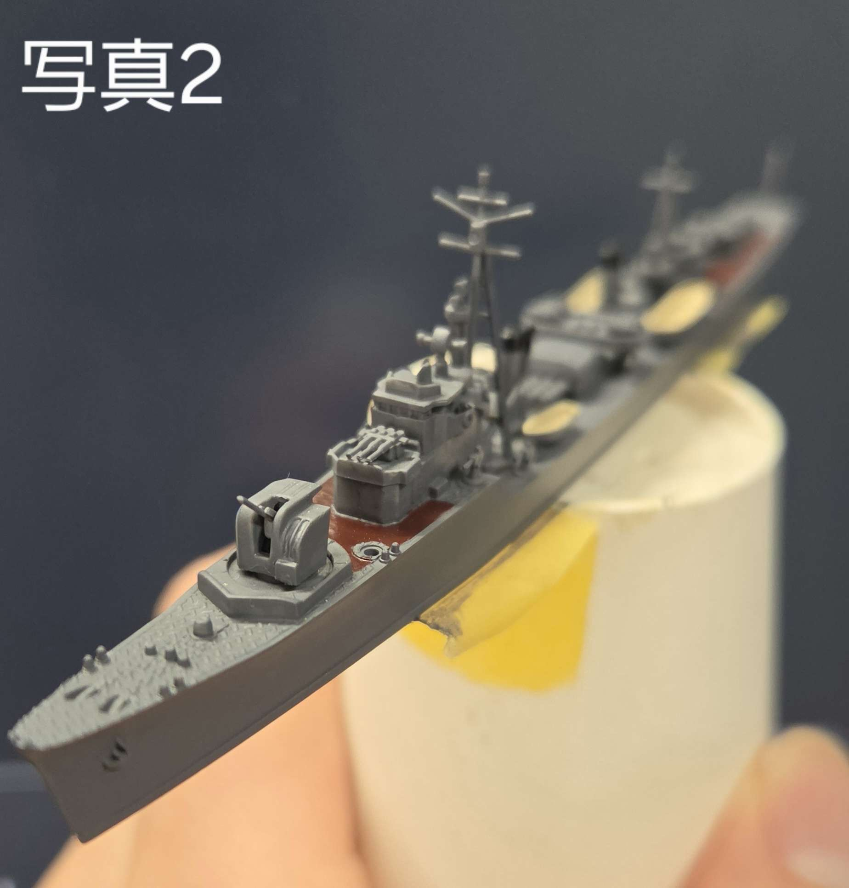

プラモ製作編
お疲れ様です～今日は６班GAのなべしゅんがお届けします！
私からは趣味のプラモ製作について発信しようと思います。
私は模型研究会の会長をしています。ですが実はプラモを作り始めたのは１年生の秋頃からなんです。創作意欲に搔き立てられたのが一番の要因です（笑）。
そんな私はGW期間の間に１作品完成させました。それが駆逐艦”松”です。

説明は長くなってしまうので、要約すると旧日本軍の大戦末期に建造された小さな船です。
組み立てても恰好はいいですが、私は塗装を施してよりリアリティを出していきます。塗り分けが終わったものが写真２にあたります。これでは終わりません。ここから汚していきさらなるデティールアップをかけます。

完成したものを次回の本講座に持っていくので写真と見比べてみてはいかがでしょうか。
なかなか今ではニッチな趣味になっている感じですが、だからこそあげてみようかなと思いました～
最後まで読んでくれた方へ感謝の念しかありません。では次の本講座で～